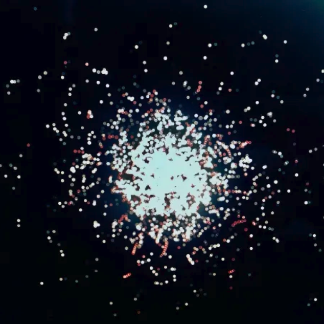

生活音をフーリエ変換して二次元座標空間に描画した。そのうちの一枚は油絵用の麻のキャンバスにUVプリントしている。
２枚目の写真は4/26のもの、３枚目の写真は4/27のもの。それぞれほぼ丸一日生活音の採取を行い、その期間自宅のみで生活した。
いつもの自分とは違った、それでいて自分に他ならない、銀河系のような人間の形。
いつもの自分とは違った、それでいて自分に他ならない、銀河系のような人間の形。
Copyright ©︎ Kei Ichikawa All Rights Reserved.